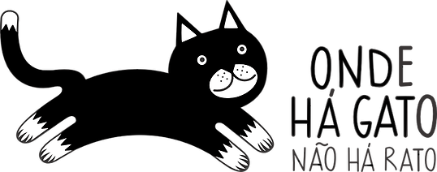

<nav class="navbar navbar-expand-lg navbar-light bg-light">
	<a class="navbar-brand" routerLink="/"></a>
	<button class="navbar-toggler" type="button" data-toggle="collapse" data-target="#navbarSupportedContent"
		aria-controls="navbarSupportedContent" aria-expanded="false" aria-label="Toggle navigation">
		<span class="navbar-toggler-icon"></span>
	</button>

	<div class="collapse navbar-collapse" id="navbarSupportedContent">
		<ul class="navbar-nav mr-auto">
		<li class="nav-item">
			<a class="nav-link" routerLink="/">Início</a>
		</li>
		<li class="nav-item dropdown">
			<a class="nav-link dropdown-toggle" href="#" id="navbarDropdown" role="button" data-toggle="dropdown" aria-haspopup="true" aria-expanded="false">
			Sobre Nós
			</a>
			<div class="dropdown-menu" aria-labelledby="navbarDropdown">
			<a class="dropdown-item" routerLink="missao">Missão</a>
			<a class="dropdown-item" routerLink="orgaos-sociais">Orgãos Sociais</a>
			<a class="dropdown-item" routerLink="perguntas-frequentes">Perguntas Frequentes</a>
			<a class="dropdown-item" routerLink="corpos-sociais">Novos Corpos Sociais</a>
			</div>
		</li>
		<li class="nav-item dropdown">
			<a class="nav-link dropdown-toggle" href="#" id="navbarDropdown2" role="button" data-toggle="dropdown" aria-haspopup="true" aria-expanded="false">
			Como ajudar
			</a>
			<div class="dropdown-menu" aria-labelledby="navbarDropdown2">
			<a class="dropdown-item" routerLink="donativos">Donativos</a>
			<a class="dropdown-item" routerLink="seja-socio">Seja Sócio</a>
			<a class="dropdown-item" routerLink="seja-voluntario">Seja Voluntário</a>
			</div>
		</li>
		<li class="nav-item">
			<a class="nav-link" routerLink="gatos-rua">Gatos de Rua</a>
		</li>
		<li class="nav-item">
			<a class="nav-link" routerLink="adopcoes">Adopções</a>
		</li>
		<li class="nav-item dropdown">
			<a class="nav-link dropdown-toggle" href="#" id="navbarDropdown3" role="button" data-toggle="dropdown" aria-haspopup="true" aria-expanded="false">
			SOS
			</a>
			<div class="dropdown-menu" aria-labelledby="navbarDropdown3">
			<a class="dropdown-item" routerLink="encontrei-gato">Encontrei um gato</a>
			<a class="dropdown-item" routerLink="perdi-gato">Perdi o meu gato!</a>
			<a class="dropdown-item" routerLink="gato-ferido">Gato Ferido</a>
			</div>
		</li>
		<li class="nav-item">
			<a class="nav-link" routerLink="contactos">Contactos</a>
		</li>
		<li class="nav-item">
			<a class="nav-link" routerLink="blogue">Blogue</a>
		</li>
		<li class="nav-item">
			<a class="nav-link" routerLink="online-store">Online Store</a>
		</li>
		</ul>
	</div>
</nav>
